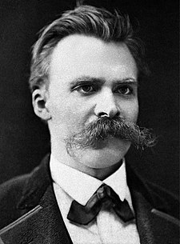

|  |
Tam adi: Friedrich Wilhelm Nietzsche Dogumu: 15 Ekim 1844, Röcken bei Lützen, Prusya Kralligi Olumu: 25 Ağustos 1900 (55 yasinda) Weimar, Saksonya, Alman İmparatorluğu Retroorbital beyin zari tümörü, frontotemporal demans, CADASIL sendromu Cagi: 19.Yuzyil Felsefesi Ilgi alanlari: Estetik, Etik, Metafizik, Nihilizm, Psikoloji, Ontoloji, Şiir, Değer teorisi, İstenççilik, Trajedi, Olgu-değer ayrimi, Anti-temelcilik, Tarih felsefesi |
Friedrich Wilhelm Nietzsche (15 Ekim 1844 - 25 Ağustos 1900) Alman filolog, filozof, kültür eleştirmeni, şair ve besteci. Din, ahlâk, modern kültür, felsefe ve bilim üzerine metafor, ironi ve aforizma dolu bir üslupla eleştirel yazilar yazmistir. Nietzsche'nin kilit fikirlerini Apollon-Dionysos ikiliği, Perspektivizm, Güç İstenci, "Tanri'nin ölümü", Üstinsan ve bengi dönüş oluşturur. Felsefesinin merkezini oluşturan şey, kişinin coşkun enerjisini sömüren her türlü öğretinin, toplumsal olarak ne kadar geçerli olursa olsun sorgulanarak "hayatin olumlanmasi"dir. Hakikatin değeri ve nesnelliği üzerine yürüttüğü kökten sorgulamasi, geniş capli yorumlarin odağini oluşturur ve etkisi özellikle kita felsefesi geleneğinde varoluşçuluk, postmodernizm ve postyapisalcilik da dâhil olmak üzere devam etmektedir.
Nietzsche, kariyerine felsefeye dönmeden önce klasik filolog (Yunan ve Roma metin eleştirmeni) olarak başladi. 1869 yilinda yirmi dört yaşindayken Basel Üniversitesinde klasik filoloji kürsüsüne, bu yeri alan en genç kişi olarak atandi. 1879 yazinda, hayatinin büyük bölümünde kendisine dert olacak olan sağlik sorunlari yüzünden istifa etti. 1889'da kirk dört yaşinda zihinsel yetilerinin tamaminin kaybiyla sonuçlanan bir çöküş yaşadi. Çöküşü sonralari, üçüncü devre sifilis hastaliginin yol actigi, nadir görülen bir genel pareziye yoruldu; fakat bu teşhiste soru işaretleri vari. Nietzsche, kalan yillarini 1897'de ölümüne kadar annesinin, 1900'de kendi ölümüne kadar kiz kardeşi Elisabeth Förster-Nietzsche'nin bakiminda geçirdi.
Bakıcısı olarak kız kardeşi, Nietzsche'nin el yazmalarının idareciliğini ve editörlüğünü üstlendi. Förster-Nietzsche, tanınmış bir Alman milliyetçisi ve antisemitist olan Bernhard Förster ile evliydi ve Nietzsche'nin yayımlanmamış yazılarını, kocasının ideolojisine uyarlamak üzere, Nietzsche'nin belirttiği, antisemitizm ile milliyetçiliğe sert ve bariz biçimde karşı çıktığı görüşlerine genellikle ters düşecek biçimde yeniden düzenledi. Förster-Nietzsche'nin yaptığı değişiklikler sebebiyle Nietzsche'nin adı, sonraları yirminci yüzyıl bilim insanları Nietzsche'nin fikirlerinin yanlış yorumlanmasına karşı harekete geçmiş olsalar da, Alman militarizmi ve Nazizm ile birlikte anılır olmuştur.
Nietzsche'nin felsefeye nüfûzu ölümünden sonradır. En ünlü eseri Böyle Buyurdu Zerdüşt dünya klasikleri arasında yerini almıştır. Felsefe dışında, bazı siyasetçilerce Hitler'i etkilemekle suçlanmaktadır. Hitler, Nietzsche'yi gençken okumuştur ve ondan "militarizm" alanında etkilenmiştir. Dreyfus Olayı, onun algılanmasında olumsuz bir örnek barındırır: Fransız antisemitik sağı Alfred Dreyfus'u savunan Yahudi ve solcu entelektüelleri "Niçeci" olarak olumsuz etiketler. Naziler Nietzsche'nin felsefesini kullanmışlardı; ancak bilindiği gibi Nietzsche bir Alman düşmanıdır. Bu etkiden ise kız kardeşi sorumludur.
Nietzsche, Avrupalı filozoflardan Michel Foucault, Gilles Deleuze, Jacques Derrida, Martin Heidegger, Albert Camus, Jean-Paul Sartre, Walter Kaufmann, R. J. Hollingdale, Alexander Nehamas, Georges Bataille ve Brian Leiter gibi isimleri etkilemiştir.
Nietzsche, örneği taklit edilemeyecek kadar benzersiz ve ürkütücüdür...